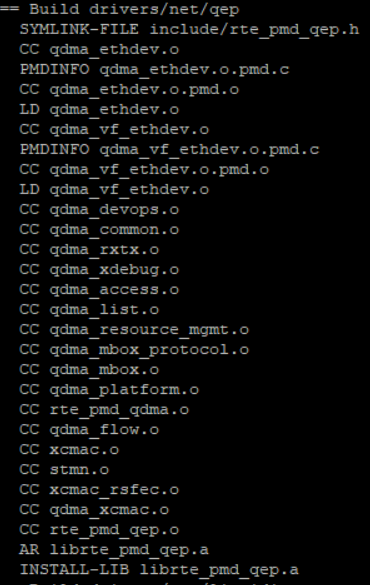

User Guide¶
This section outlines the steps to bringup QEP environment and build and execute DPDK driver
QEP Environment bringup¶
Installing the board¶
Shutdown the Host system and unplug it from its power source. Locate a Gen 3 x16 dual width PCIe slot on the motherboard and insert the Xilinx Alveo U250 board. Connect a USB cable between the host system and the U250 board.
Note: Follow the safety instructions listed in UG1301 while installing the card in the PCIe slot
Installing the Xilinx tools¶
- Power up the host system and login as root user
2. Download the Vivado Design Suite 2019.1 from https://www.xilinx.com and install it according to the instructions provided in UG973.
- Install Cable drivers by following the instructions from UG973.
Programming the QEP DSA¶
- Program the U250 board with QEP Platform deployment shell from the QEP Lounge.
- Once the device is programmed sucessfully with QEP Platform shell, execute the following command on the host system
#lspci -d 10ee:Following is the sample output
81:00.0 Processing Accelerators: Xilinx Corporation Device 5014 81:00.1 Processing Accelerators: Xilinx Corporation Device 5015 81:00.2 Ethernet controller: Xilinx Corporation Device 5016
Building QEP DPDK Software¶
DPDK requires certain packages to be installed on host system. For a full list, refer to the official DPDK documentation: https://doc.dpdk.org/guides/linux_gsg/sys_reqs.html.
Note: If the NUMA library is missing, it should be installed. For example:
For Ubuntu:
sudo apt-get install libnuma-devFor Red Hat:
sudo yum install numactl-devel
Xilinx QEP DPDK Software database structure¶
Below Table describes the DPDK software database structure and its contents on the Xilinx GitHub https://github.com/Xilinx/qep-drivers .
| Directory | Description |
|---|---|
| DPDK/drivers/net/qep | Xilinx QEP DPDK poll mode driver |
| DPDK/RELEASE.txt | DPDK driver Release Notes |
| DPDK/tools/procinfo.patch | Patch to dpdk proc-info application for additional debug information. |
Setup: Download and modifications¶
The QEP driver code requires DPDK version 18.11. Follow the steps below to download the proper version of DPDK and apply driver code and test application supplied in the GitHub.
Extract the DPDK driver software database from the Xilinx GitHub to the server where U250 card is installed. Henceforth, this area is referred as <dpdk_sw_database>.
Create a directory for the DPDK download on the server where the U250 card is installed and move to this directory.
mkdir -p <host_dir>/<dpdk_test_area>
cd <host_dir>/<dpdk_test_area>
git clone http://dpdk.org/git/dpdk-stable
cd dpdk-stable
git checkout v18.11
cp -r <dpdk_sw_database>/DPDK/drivers/net/qep ./drivers/net/
cp -r <dpdk_sw_database>/DPDK/tools/procinfo.patch .
Additionally, make below changes to the DPDK 18.11 tree to build QEP driver, and populate Xilinx devices for binding.
- To build QDMA driver
- Add below lines to
./config/common_basein DPDK 18.11 tree# #Complie Xilinx QEP PMD driver # CONFIG_RTE_LIBRTE_QEP_PMD=y CONFIG_RTE_LIBRTE_QDMA_DEBUG_DRIVER=nTo enable driver debug logs, set
CONFIG_RTE_LIBRTE_QDMA_DEBUG_DRIVER=y
- Add below lines to
drivers/net/Makefile, where PMDs are added (e.g. after QEDE PMD)DIRS-$(CONFIG_RTE_LIBRTE_QEP_PMD) += qep
- Add below lines to
mk/rte.app.mk, where PMDs are added (e.g. after QEDE PMD)_LDLIBS-$(CONFIG_RTE_LIBRTE_QEP_PMD) += -lrte_pmd_qep
- To add Xilinx devices for device binding, add below lines to
./usertools/dpdk-devbind.pyafter cavium_pkx class, where PCI base class for devices are listed.xilinx_qep_pf = {'Class': '05', 'Vendor': '10ee', 'Device': '7002,5016', 'SVendor': None, 'SDevice': None}Update entries in network devices class in
./usertools/dpdk-devbind.pyto add Xilinx devicesnetwork_devices = [network_class, cavium_pkx, avp_vnic, xilinx_qep_pf]
- To patch dpdk-procinfo Application.
patch -p1 < procinfo.patch
Setup: Host system¶
DPDK requires that hugepages are setup on the server.
The following modifications must be made to the /boot/grub/grub.cfg on the host system
Add hugepages for DPDK
Add following parameter to
/etc/default/grub fileGRUB_CMDLINE_LINUX="default_hugepagesz=1GB hugepagesz=1G hugepages=6"
The example above adds six 1GB hugepages, which are required to support 256 queues, with descriptor ring of 2048 entries, and each descriptor supporting buffer size of 4KB.The number of hugepages required should be changed if the above configuration (queues, ring size, buffer size) changes.
Execute the following command to modify the /boot/grub/grub.cfg with the configuration set in the above steps and permanently add them to the kernel command line.
update-grub
Reboot host system after making the above modifications.
Setup: Make Commands¶
Compile DPDK & QEP driver
Execute the following to compile the driver.
cd <host_dir>/<dpdk_test_area>/dpdk-stable make config T=x86_64-native-linuxapp-gcc install
In the make output, verify that the QEP driver files are being built. Below figure shows the QEP driver files that are built as part of make.
The following should appear when make completes
Build complete [x86_64-native-linuxapp-gcc]
Verify that
librte_pmd_qep.ais installed in./x86_64-native-linuxapp-gcc/libdirectory.
If any of above steps are missed or require code modifications,
perform make clean before re-running make.
For driver related modifications, perform make clean
from inside x86_64-native-linuxapp-gcc directory.
Configure Ethernet MAC address for device¶
Compile qep-ctl application by executing below commands
cd <dpdk_sw_database>/qep-ctl gcc qep_ctl.c -o qep-ctl
Configure the Ethernet MAC address of the device from Management PF using qep-ctl application using below example command.
./qep-ctl config -d 81:00.0 -m 00:5D:03:00:00:02This command just sets the MAC address of the network device but doesn’t enable MAC and VLAN filtering. Refer to readme.txt in qep-ctl application for usage details.
Execute the below command to verify that the MAC address is set
./qep-ctl show -d 81:00.0
Running the DPDK software test application¶
The below steps describe the procedure to run the DPDK testpmd application on QEP network PF.
- Navigate to DPDK root directory.
cd <host_dir>/<dpdk_test_area>/dpdk-stable/
- Run the ‘lspci’ command on the console and verify that the PFs are detected as shown below. Here, ‘81’ is the PCIe bus number on which Xilinx device is installed.
# lspci | grep Xilinx
81:00.0 Processing Accelerators: Xilinx Corporation Device 5014
81:00.1 Processing Accelerators: Xilinx Corporation Device 5015
81:00.2 Ethernet controller: Xilinx Corporation Device 5016
- Execute the following commands required for running the DPDK application
mkdir /mnt/huge
mount -t hugetlbfs nodev /mnt/huge
modprobe uio
insmod x86_64-native-linuxapp-gcc/kmod/igb_uio.ko
- Bind PF port to the igb_uio module as shown below
./usertools/dpdk-devbind.py -b igb_uio 81:00.2
Connect the U250 card with a peer NIC or IXIA using a QSFP+ cable and run the testpmd using the following sample command:
./x86_64-native-linuxapp-gcc/app/testpmd -c3ff -n4 -w 81:00.2 -- -i --nb-cores=9 --rxq=8 --txq=8 --rxd=2048 --txd=2048 --burst=64 --mbuf-size=4224 --max-pkt-len=9000
Refer testpmd application user guide (https://fast.dpdk.org/doc/pdf-guides-18.11/testpmd_app_ug-18.11.pdf) for details on testpmd execution.Start traffic from peer and compare the statistics on both ends.
Configuring the driver¶
Supported Device arguments (module parameters)¶
Device specific parameters can be passed to a device by using the ‘-w’ EAL option. Xilinx supports following device arguments to configure QEP DPDK Driver.
rsfec
This parameter Specifies whether to enable or disable RS-FEC. Default is set to 1 i.e. enable in the driver.
Example usage:
./x86_64-native-linuxapp-gcc/app/testpmd -c 0x1f -n 4 -w 81:00.2,rsfec=0
This example disables RS-FEC on the MAC for device “81:00.2”.
Virtual Machine (VM) execution and test¶
Assuming that the VM image has been created with the settings outlined in Table Guest System Configuration, follow below steps to execute testpmd on VM.
Update
/etc/default/grubfile on Host system as below to enable IOMMU.GRUB_CMDLINE_LINUX="default_hugepagesz=1GB hugepagesz=1G hugepages=9 iommu=on intel_iommu=pt"
Execute the following command to modify the
/boot/grub/grub.cfgwith the configuration set in the above step and permanently add them to the kernel command line.update-grub
Update following kernel parameters in /etc/sysctl.conf file to set shared memory for VM
kernel.shmmax = 9663676416 # 9GB huge page memory in bytes vm.hugetlb_shm_group = 0
Reboot host system after making the above modifications.
2. Find the Vendor Id (e.g. 10ee) and Device Id (e.g. 5016) of the PCIe function being attached to VM using lspci command.
Add the Vendor Id and Device Id to vfio-pci configuration file /etc/modprobe.d/vfio.conf to bind the function to vfio-pci as below
options vfio-pci ids=10ee:5016Create the file
/etc/modprobe.d/vfio.conf, if it doesn’t exist already.
Insert the vfio-pci module
modprobe vfio-pci
On the host system, configure MAC address of the device from Management PF using qep-ctl application as outlined in section Configure Ethernet MAC address for device
On Host, mount huge page with below command.
mkdir /mnt/huge mount -t hugetlbfs nodev /mnt/huge
Start the VM with host backed hugepage memory using below command by attaching the network PF (81:00.2 in this example) to VM
qemu-system-x86_64 -cpu host -enable-kvm -m 8192 -mem-prealloc -mem-path /mnt/huge -smp sockets=1,cores=32 -hda vm_image.qcow2 -device vfio-pci,host=81:00.2 -vnc :1
Copy the DPDK source code in VM by executing below command from VM.
scp -r <username>@<host_ip>:<dpdk_sources> <dpdk_copy_path_in_vm>
Execute steps as outlined in section Building QEP DPDK Software to build DPDK on VM
Bind the network function in VM to igb_uio driver and execute testpmd in VM as outlined in section Running the DPDK software test application.